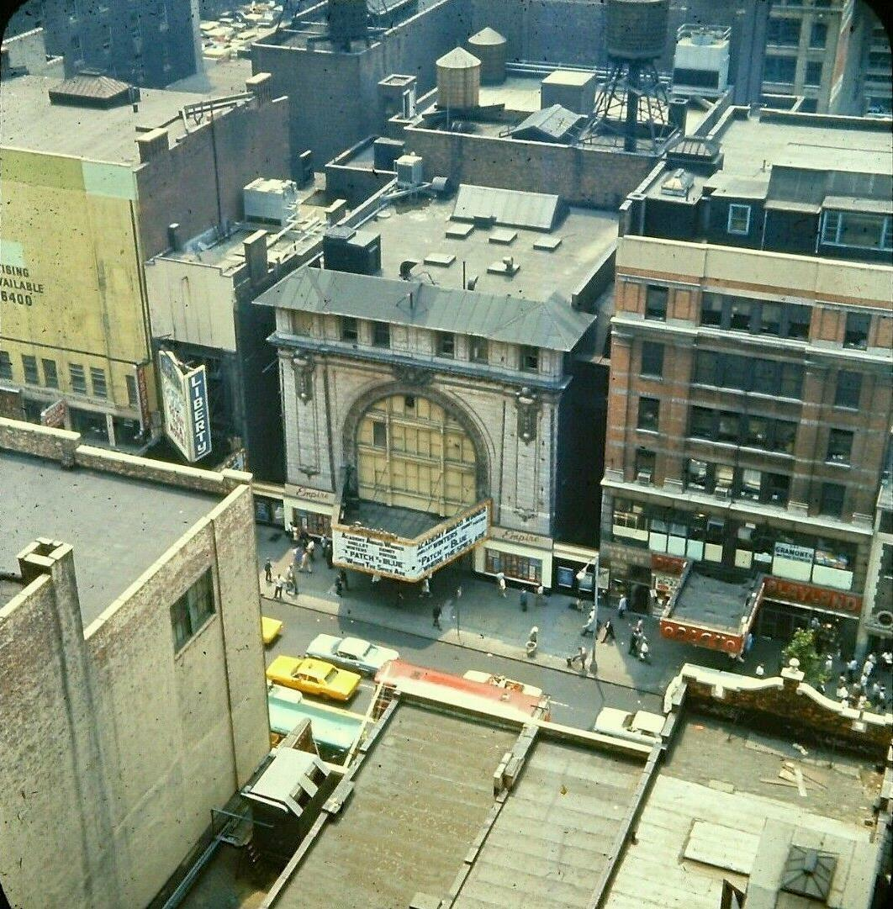
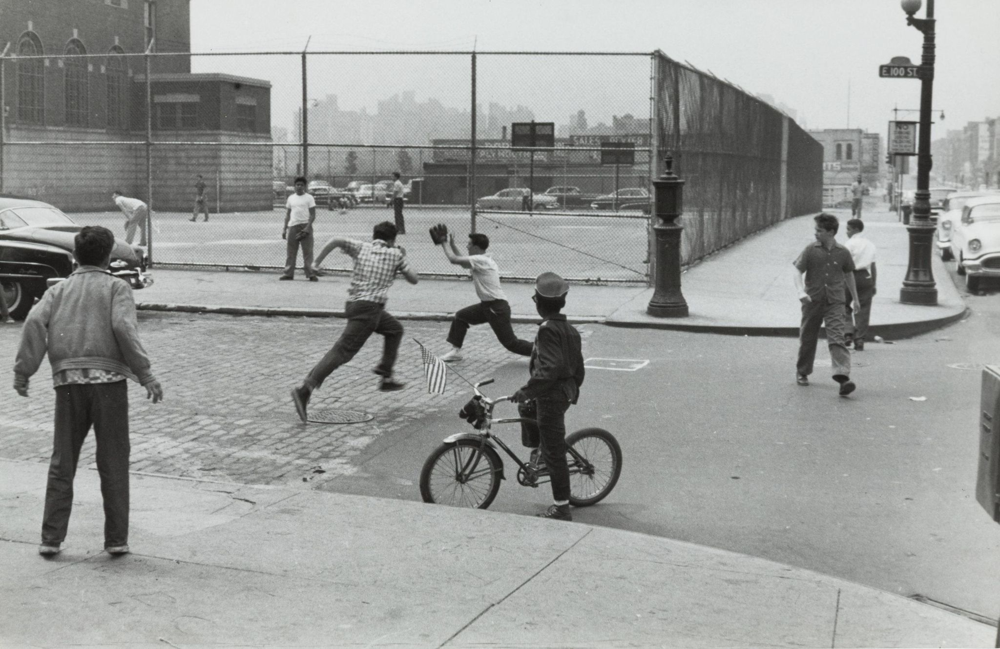

Walking down Central Park West during snow storm. Winter 1968/69
Walking down Central Park West during snow storm. Winter 1968/69

Jesus got old.
Rough 70s graffiti
Hair People, cigars, and bad ties. E. 58th Street, 1974.

Downtown NYC in the winter of 1982

CBGB

Zombie waiting for the payphone, 1982

Playland, 42nd Street, 1987

Big-ass breakfast, $1.30. In 1976.
Why is that dude holding on with both hands?
Iz The Wiz on the QB
Broadway and 86th, 1969
Lone Star Cafe, 1979, corner of 5th Ave and 13th Street

Hollander Pickles on Essex Street, 1979.
Photo by Peter Bennett, https://www.citizenoftheplanet.com/les-gallery

3344 Third Ave., Bronx. 1981. Camilo Vergara.

February 3, 1954: Nighttime skaters at Wollman Rink in Central Park.
Photo: Marvin E. Newman for Sports Illustrated via Getty Images
Art, where Battery Park City will someday sprout up. 1980.

Looking down at 42nd Street between 7th & 8th Avenues, 1966, with a view of the Empire Theater.
Photo from the collection of Al Ponte
Historical Remnants Inside the AMC Empire 25 Theater in Times Square

Henri Cartier-Bresson. Children Playing in the Streets, Harlem, New York, c. 1960.
The worst postcard in the world? Looking at the East River, 1983
Midtown, 1960
Broadway and 17th Street, 1982
Black Panther, Times Square, 1973
Tagging, 1972
Gringo looking down on himself, 1984, St. Mark’s Place
Matt Dillon on the 1 train, 1981

Brooklyn Heights, 1970s
1980s fashion